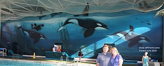

After the uncertainty in looking for #2 we felt much more certain about finding Orcas off Point Loma as we knew it was at Belmont Park and at an indoor pool. The big questions were whether we would have to pay to get into the park and whether there was any way to get inside the pool.
It turns out, unlike Disneyland or Sea World which requires everyone to pay to get in, Belmont Park has no entrance fee. The pool itself is on the south end of Belmont Park and is actually the Wave House Athletic club which can be accessed directly from the south parking lot.
The people at the club were very nice and let us into the pool to take our picture. The pool at the club has a long history and is referred to as The Plunge in the Wyland literature.